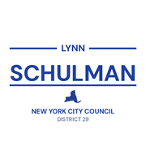
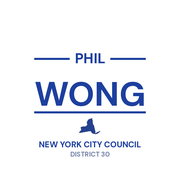
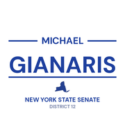
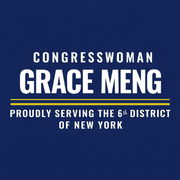
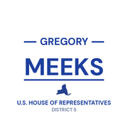

The district
 City Council
City Council State Senate
State Senate Congress
Congress Subway
Subway Citi Bike
Citi Bike NYC Ferry
NYC FerryTurn layers on and off. Tap an official's logo or a board's seal for its page. Zoning and land use lot by lot are on the land use map.
About
Assembly Member Andrew Hevesi represents State Assembly District 28. It sits in Queens.
The district overlaps community boards Queens 5, Queens 6 and Queens 9.
It is policed by the 102nd, 104th and 112th Precincts.
It overlaps council districts 29, 30 and 32 and Senate districts 12, 14 and 15.
Members of the State Assembly serve two year terms.
Next on the ballot in November 2026. Find your poll site and sample ballot there, or see what is coming up on the calendar.
Assembly District 28 in numbers
U.S. Census Bureau, American Community Survey 2019-2023 5-year estimates.
Bills
Committees
Contact
Overlap
Community boards


Bars show how many of the district's election districts fall in each board.
Overlapping elected officials








| Queens CB 5 | 42% of the assembly district | 29% of it |
| Queens CB 6 | 39% of the assembly district | 69% of it |
| Queens CB 9 | 10% of the assembly district | 14% of it |
| Queens park/airport area | 9% of the assembly district | 55% of it |
| 104 Precinct | 42% of the assembly district | 29% of it |
| 112 Precinct | 39% of the assembly district | 63% of it |
| 102 Precinct | 19% of the assembly district | 21% of it |
| Sector 104D | 31% of the assembly district | 65% of it |
| Sector 112A | 24% of the assembly district | 100% of it |
| Sector 102C | 10% of the assembly district | 62% of it |
| Sector 102D | 9% of the assembly district | 33% of it |
| Sector 104A | 9% of the assembly district | 20% of it |
| Sector 112B | 8% of the assembly district | 76% of it |
| Sector 112D | 6% of the assembly district | 33% of it |
| Sector 104B | 3% of the assembly district | 13% of it |
| Sector 112C | 1% of the assembly district | 9% of it |
| School District 24 | 50% of the assembly district | 19% of it |
| School District 28 | 48% of the assembly district | 28% of it |
| School District 27 | 2% of the assembly district | 0% of it |
| Council District 30 | 43% of the assembly district | 38% of it |
| Council District 29 | 40% of the assembly district | 45% of it |
| Council District 32 | 17% of the assembly district | 7% of it |
| Senate District 15 | 71% of the assembly district | 36% of it |
| Senate District 14 | 24% of the assembly district | 10% of it |
| Senate District 12 | 5% of the assembly district | 3% of it |